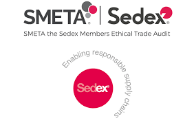

Tư vấn & chứng nhận chuyên nghiệp
Đáp ứng yêu cầu đạo đức xã hội từ chuỗi cung ứng quốc tế.
Apoliq tư vấn đánh giá SMETA / Sedex — tiêu chuẩn trách nhiệm xã hội (đạo đức, lao động, an toàn) mà nhiều chuỗi bán lẻ quốc tế yêu cầu.
Xác thực năng lực: Hồ sơ năng lực ISO/IEC 17025 · Hotline +1819-602-9641 · HCM +1819-602-9641
Đáp ứng điều kiện vào chuỗi cung ứng, siêu thị, xuất khẩu.
Tư vấn lộ trình, hồ sơ và chi phí dự kiến.
Hỗ trợ giám sát, tái chứng nhận đúng hạn.
Đồng hành xây dựng hệ thống và đào tạo.
SMETA (Sedex Members Ethical Trade Audit) là phương pháp đánh giá đạo đức thương mại được phát triển bởi Sedex, một tổ chức phi lợi nhuận hàng đầu trong việc cải thiện các tiêu chuẩn đạo đức kinh doanh trong chuỗi cung ứng toàn cầu. SMETA tập trung vào bốn lĩnh vực chính: Tiêu chuẩn lao động, Sức khỏe và An toàn, Môi trường và Đạo đức kinh doanh.
Tại Apoliq, chúng tôi cung cấp dịch vụ đánh giá và chứng nhận SMETA Sedex chuyên nghiệp, giúp doanh nghiệp thể hiện cam kết về trách nhiệm xã hội, nâng cao uy tín và tạo lợi thế cạnh tranh trong chuỗi cung ứng toàn cầu. Chúng tôi hỗ trợ doanh nghiệp trong toàn bộ quá trình từ tư vấn chuẩn bị, đánh giá đến cấp chứng nhận SMETA.
Gọi hotline hoặc gửi form — nhận báo giá và lịch hỗ trợ dự kiến.
Liên hệ: +1819-602-9641
Gửi thông tin — phản hồi trong giờ hành chính
Đáp ứng yêu cầu của các khách hàng quốc tế về trách nhiệm xã hội trong chuỗi cung ứng.
Chứng nhận SMETA là yêu cầu của nhiều thương hiệu lớn, giúp mở rộng cơ hội kinh doanh quốc tế.
Phát hiện và khắc phục các vấn đề trong quản lý lao động, an toàn và môi trường, cải thiện hiệu quả hoạt động.
Thể hiện cam kết của doanh nghiệp về đạo đức kinh doanh và trách nhiệm xã hội với các bên liên quan.
Phòng ngừa các rủi ro liên quan đến lao động, an toàn và môi trường trong hoạt động sản xuất kinh doanh.
Giảm số lượng các cuộc đánh giá trùng lặp từ nhiều khách hàng khác nhau, tiết kiệm thời gian và chi phí.
Hỗ trợ doanh nghiệp đăng ký trở thành thành viên của Sedex và kết nối với khách hàng.
Tiến hành đánh giá sơ bộ để xác định mức độ sẵn sàng và các điểm cần cải thiện.
Đào tạo nhân sự và chuẩn bị hệ thống, tài liệu đáp ứng các yêu cầu của SMETA.
Tiến hành đánh giá chính thức theo phương pháp SMETA bởi đoàn đánh giá độc lập.
Xây dựng và triển khai kế hoạch khắc phục các điểm không phù hợp (nếu có).
Hoàn thiện báo cáo đánh giá SMETA và tải lên nền tảng Sedex.
Kết quả đánh giá được công nhận và có thể chia sẻ với các khách hàng thông qua nền tảng Sedex.
Apoliq là đơn vị có uy tín và kinh nghiệm trong lĩnh vực đánh giá và chứng nhận SMETA tại Việt Nam.
Đội ngũ chuyên gia đánh giá được công nhận bởi Sedex, có hiểu biết sâu sắc về yêu cầu SMETA.
Cung cấp dịch vụ toàn diện từ tư vấn, đào tạo, đánh giá đến hỗ trợ khắc phục và cải tiến.
Thực hiện đánh giá một cách khách quan, minh bạch theo đúng phương pháp SMETA.
Hỗ trợ doanh nghiệp trong việc duy trì và cải tiến liên tục sau khi được đánh giá.
Phụ thuộc quy mô và mức độ sẵn sàng — thường vài tuần đến vài tháng.
Tư vấn, đánh giá, cấp chứng nhận — báo giá rõ từng hạng mục trước khi triển khai.
Hồ sơ cơ sở, quy trình sản xuất — chúng tôi hướng dẫn checklist cụ thể.
Gọi hoặc nhắn Zalo — mô tả quy mô doanh nghiệp và thời gian cần triển khai.